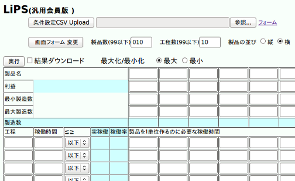

線型計画 LiPS(汎用会員版)について
汎用的なツールLiPSは、
製品10、工程10までのコンパクトなモデルしかサポートして居ません。
LiPS(汎用会員版)は以下の点が拡張されています。

- シミュレーション条件をCSVファイルで設定できます。
- 製品数、工程数ともに99まで増減できます。対象モデルに合わせた表組みができます。
- [製品を縦、工程を横] に表示する事も[製品を横、工程を縦]に並べることもできます。
製品数が多くなってきたとき、製品の並びを縦にすると見やすいでしょう。
- シミュレーション結果をCSVで取り出すことができます。